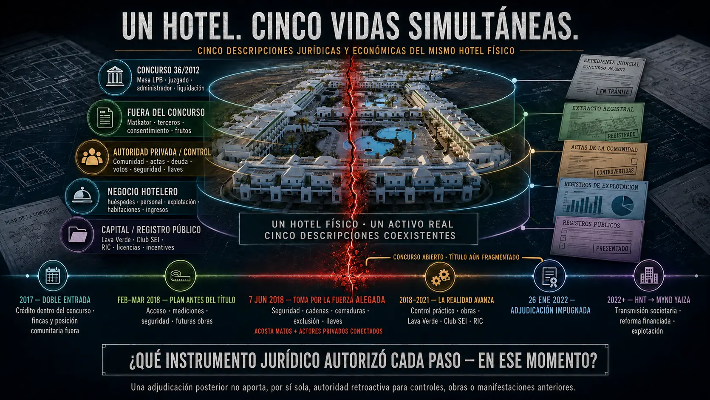

Activo de identidad canónico del repositorio; no identificado por inferencia facial.
22 jun 2011 → administración / custodiaFrancisco Mario Matos MatasEsposo de Shaila María Cogolludo RamosEl acta de 22 de junio de 2011 lo identifica como administrador de la Comunidad. Gil le atribuye continuidad en deuda, voto, cuentas, información, acceso y ejecución material. La responsabilidad exige actos propios, no parentesco.
Activo de identidad canónico del repositorio; no identificado por inferencia facial.
22 jun 2011 → administración / custodiaFrancisco Mario Matos MatasEsposo de Shaila María Cogolludo RamosEl acta de 22 de junio de 2011 lo identifica como administrador de la Comunidad. Gil le atribuye continuidad en deuda, voto, cuentas, información, acceso y ejecución material. La responsabilidad exige actos propios, no parentesco.
Una plataforma independiente en desarrollo
Recuperar mediante la prueba. Construir para perdurar.
Project Sun Rock une tres líneas distintas: proteger derechos y activos mediante un expediente verificable, preparar oportunidades comerciales responsables y desarrollar una iniciativa de interés público jurídicamente separada.

Acusación penal rectora · cinco actores privados + AC + Juez
Cinco actores, Administrador Concursal y Juez: funciones separadas, una cadena que debe probarse.
Gil Marer acusa directamente a cinco personas privadas de haber formado, a más tardar en 2018, una estructura coordinada de administradores de hecho o en la sombra sobre la esfera patrimonial y empresarial de Luchy Playa Blanca y la plataforma hotelera integrada. Atribuye separadamente al Administrador Concursal y al Magistrado-Juez actos afirmativos, comisiones y omisiones que habrían habilitado, preservado y consolidado el mecanismo.
Vista principal del mecanismo económico, sus cinco actores privados y sus dos puntos institucionales de control.
Formulación penal controlante · publicada por Gil Marer
No se alega mera pasividad: se alegan instrucción, ejecución, habilitación, adopción, ratificación y sabotaje de la salida.
La acusación conecta deuda y voto, acceso y seguridad, llaves, mantenimiento, obras y valoración, información, estrategia concursal, operación, ingresos, título y resultado. Es una acusación directa, no una sentencia ni una prueba de desembolso o propósito común.
Fecha mínima verificadaAlegación directa atribuidaPrueba contraria obligatoriaPrueba decisiva pendiente
Perímetro privado identificado · 5
Cinco administradores de hecho o en la sombra alegados dentro de una cadena funcional
Gil alega actuación coordinada, pero no atribuye automáticamente cada acto a los cinco: función, autoridad, conocimiento, instrucción, intención, beneficio y causalidad deben probarse persona por persona. Parentesco o vínculo empresarial no sustituyen esa prueba.
Activo de identidad canónico del repositorio; no identificado por inferencia facial.
22 jun 2011 → administración / custodiaFrancisco Mario Matos MatasEsposo de Shaila María Cogolludo RamosEl acta de 22 de junio de 2011 lo identifica como administrador de la Comunidad. Gil le atribuye continuidad en deuda, voto, cuentas, información, acceso y ejecución material. La responsabilidad exige actos propios, no parentesco.
Fechas mínimas bloqueadas: acreditan implicación no más tarde de la fecha indicada; no afirman que ese fuera el primer día real.
Administrador Concursal y Magistrado-Juez: imágenes, funciones, comisiones, omisiones y límites
No son un sexto y séptimo actor privado. La matriz exige vincular cada conducta privada con el conocimiento, poder/deber, acto afirmativo u omisión y consecuencia atribuidos a cada nodo institucional.

Administrador Concursal · gatekeeper fiduciario · Concurso 36/2012Francisco de Borja Rodríguez-Batllori Laffitte
Su relevancia depende de qué verificó, solicitó, autorizó, transmitió, implementó, adoptó, ratificó, toleró, informó, preservó o intentó revertir mientras administraba la masa de LPB; no de haber ejecutado personalmente cada acto privado.
Actos afirmativos / comisiones alegadas
- Usar la mayoría LPB para promover la ruta comunitaria de seguridad y acceso de 18 de mayo de 2018.
- Participar en correos, reuniones, peticiones y autorizaciones utilizados para acceso, vigilancia o mantenimiento.
- Adoptar o ratificar después el resultado y utilizar insumos comunitarios de deuda, certificados o cálculos.
Omisiones alegadas
- No delimitar ni supervisar suficientemente seguridad, acceso, llaves y mantenimiento.
- No recuperar después del aviso el control, proteger los patrimonios y exigir cuentas.
- No completar o preservar la salida financiada ni informar íntegramente al Juzgado de la alteración material alegada.
Acusación directa de Gil Marer: el AC habría suministrado y utilizado la vía de autoridad, coordinado por correos y reuniones, autorizado accesos y medidas, adoptado o ratificado resultados y omitido delimitar, supervisar, restaurar y rendir cuentas, habilitando conscientemente la administración de hecho alegada.
Prueba contraria obligatoria: el AC negó haber ordenado la toma principal de cerraduras y describió una autorización más estrecha de mantenimiento/supervisión. Deben probarse alcance, primer aviso, capacidad, deber, conocimiento, intención, contribución causal y toda medida protectora o restaurativa.

Magistrado-Juez · supervisión y tutela judicial efectivaAlberto López Villarrubia
Gil sostiene que el problema no se reduce a resoluciones desfavorables: el test es conocimiento → competencia → remedio disponible → acto, negativa, cierre, demora u omisión → efecto sobre activo, explotación, salida y derechos extraconcursales.
Actos afirmativos / comisiones alegadas
- Dictar resoluciones, negativas o direcciones procesales que Gil alega preservaron o legitimaron el resultado de control privado.
- Mantener un curso procesal que no dio eficacia a la salida financiable tras el aviso profesional de junio de 2018.
- Dejar sin conciliación material control, título, rescate y causalidad en la forma que Gil califica de habilitación judicial afirmativa.
Omisiones alegadas
- No otorgar protección efectiva y oportuna frente al cambio de control material alegado.
- No preservar el hotel operativo y las rutas ONA, financiación puente/bancaria o venta.
- No exigir cuenta completa de acceso, cerraduras, seguridad, obras, ingresos y control ni revertir el resultado cuando aún habría remedio.
Acusación directa de Gil Marer: resoluciones, negativas, cierres probatorios, demoras y omisiones habrían preservado el mecanismo privado y saboteado o frustrado una salida desarrollada, multivía y respaldada por financiación. Gil lo califica como prevaricación consciente en las modalidades jurídicamente aplicables.
Prueba contraria obligatoria: el informe Irigoyen no es acta judicial; las rutas tenían condiciones; constan la suspensión de 26 de junio de 2018, la no convalidación de 24 de octubre de 2019 y aspectos parcialmente favorables en 2021. Resolución adversa, error o demora no prueban por sí solos prevaricación, propósito o causalidad.
Conducta privada alegada → comisión/omisión del AC → acto/omisión judicial → prueba que debe cerrar el enlace
Cada fila conserva la acusación directa y evita transferir automáticamente a una persona los actos de otra. Se exige un puente documental individualizado.
Actor privadoFunción/conducta privada alegadaVínculo AC: actos, comisiones y omisionesVínculo judicial: actos y omisionesLímite y prueba decisiva
Francisco Mario Matos MatasAdministración comunitaria, registros, deuda/voto, custodia, seguridad, cuentas e información.Gil vincula la petición/uso de la ruta Comunidad–seguridad, reuniones y certificados/deuda con falta de verificación independiente y falta de restitución o cuenta tras el aviso.Gil vincula resoluciones, negativas, cierres y demoras con la permanencia sin resolver de autoridad, deuda/voto, acceso y efectos.Instrucciones nativas, órdenes a proveedores, papel físico exacto, conocimiento, propósito y beneficio. No está probado que procurara una decisión judicial.
Antonio Cogolludo RojasRelevo de autoridad y participación directa alegada en seguridad, acceso, llaves e implementación del 7 de junio.Gil enlaza la solicitud/ratificación de seguridad con falta de delimitación del mandato, supervisión del acceso y reversión después del exceso denunciado.Gil enlaza falta de examen y remedio sobre mandato, proveedores, presencia e instrucciones con consolidación del resultado.Comunicaciones exactas, mandato, orden a seguridad/cerrajero, presencia, conocimiento e intención. No está probado que procurara o conociera una decisión judicial.
Shaila María Cogolludo RamosContinuidad administrativa Pamanil/Comunidad, comunicaciones, tesorería, cuentas, voto y posible habilitación individual.Gil vincula el uso de deuda, actas o certificados con no verificar autoría, capacidad, exactitud y efecto ni separar su conducta personal.Gil vincula cierres o falta de producción de registros nativos con ausencia de atribución persona por persona.Instrucción/presencia exacta en 2018, documentos, autoridad, conocimiento, beneficio e intención; los actos familiares o societarios no se transfieren automáticamente.
José Daniel Acosta MatosPlanificación, aproximaciones previas, ruta acreedor/proyecto, financiación, futura explotación y resultado.Gil vincula correos, reuniones, autorizaciones y posiciones de liquidación con el puente alegado entre crédito/proyecto y control, sin separar derechos de acreedor de autoridad sobre el hotel completo.Gil enlaza el aviso profesional sobre la salida con decisiones y omisiones posteriores que habrían preservado control/proyecto y bloqueado dependencias institucionales.Comunicaciones, mandato y puente planificación–orden operativa. Su presencia física el 7 de junio no está establecida ni está probado que procurara decisiones judiciales.
Laura Patricia Acosta MatosPapel jurídico/concursal CAM, acceso, participación e instrucción directa alegadas el 7 de junio y continuidad posterior.Gil vincula autorizaciones de entrada y la ruta de seguridad/mantenimiento con adopción o falta de reversión tras puerta forzada y cerraduras. La comunicación exacta AC–LPAM debe producirse.Gil enlaza falta de tutela, investigación y remedio sobre la atribución contemporánea y continuidad posterior con el resultado consolidado.Mandato, presencia, instrucción, llamadas/mensajes, conocimiento y propósito. No están probados contacto impropio, procura o conocimiento judicial por LPAM.
Ninguna fila declara culpabilidad. La acusación directa se conserva; cada vínculo exige prueba de capacidad, acto propio, conocimiento, deber, intención, causalidad y beneficio. El archivo provisional de 2018 y su confirmación, la negativa del AC, los derechos crediticios/títulos válidos de CAM, la adjudicación posterior y cada acto judicial correctivo deben leerse en su alcance exacto.


TESIS DE USO CRIMINAL · DOCUMENTAL · NO ES UNA CONDENA
La Calificación exige una investigación separada.
El registro actual sustenta una tesis investigativa seria y documental: alegaciones materialmente excesivas del AC, un dictamen fiscal severo y defectuoso de dos páginas, circularidad en DI 248, adopción judicial de proposiciones adversas seleccionadas y posible beneficio para el perímetro Acosta Matos.
Nuestra posiciónLa secuencia exige comprobar de forma independiente una posible inversión de responsabilidad y desviación del escrutinio.
Límite de apelaciónRPL 2523/2025 debe resolverse sólo por sus actuaciones, motivos, contradicción y Derecho.
Primero lo esencial
El caso, explicado en 60 segundos.
Una puerta de entrada profesional en lenguaje llano. No sustituye el dossier ni sus fuentes: permite entender primero la secuencia y comprobar después cada documento.
- 1. Dominio fragmentadoEl certificado aportado por CAM en julio de 2021 identificó 262 fincas: 54 de CAM, 190 de LPB y 18 de terceros.
- 2. Promoción antes del títuloSun Park se promovió ante inversores en 2020; la escritura que transmitió a CAM las fincas concursales enumeradas no llegó hasta el 21 de febrero de 2022.
- 3. Aviso formalLa objeción sobre título, comercialización e inversores entró en el concurso en febrero y junio de 2021, fue trasladada en julio y unida al expediente en septiembre.
- 4. Hubo respuesta, pero no conciliaciónCAM y el Administrador Concursal pidieron excluir la nueva cronología; el juez confirmó después que fue admitida, pero la declaró irrelevante sin identificar la conciliación patrimonial reclamada.
- 5. Resultado operativoAutos incompatibles en octubre, aclaración en enero, testimonios y escritura en febrero e inscripción a favor de CAM en abril de 2022.
La acusación y la pregunta en una frase.Gil Marer alega que cinco actores ejercieron administración de hecho o en la sombra sobre deuda, voto, acceso, seguridad, proyecto, operación e ingresos, habilitados por actos y omisiones del AC y del juez. ¿Qué documento contemporáneo concilió esa autoridad material con el título fragmentado, las unidades privadas, la salida financiada, la promoción de 2020, la adjudicación y la explotación integral posterior? Prodúzcase, identifíquese quién lo verificó o declárese formalmente que no se ha localizado.
EMPIECE POR SU FUNCIÓN
Un expediente; cuatro puertas de entrada.
No necesita leerlo todo para empezar. Elija la ruta que corresponde a su responsabilidad; cada una vuelve a las mismas fuentes, límites y correcciones.
01 · Autoridad públicaResolver por competenciaHechos, aviso, deber, pregunta finita y documento que puede cerrar cada punto.Abrir sala limpia institucional →
02 · Medio o investigadorComprobar antes de publicarCronología, cifras controladas, fuentes primarias, contradicciones y lenguaje de atribución.Abrir guía de trazabilidad →
03 · Propietario o afectadoSeguir activos, derechos e ingresosPerímetros separados, objetivos de restitución y vías de aportación documental.Abrir objetivos de recuperación →
04 · Profesional o financiadorEvaluar una colaboración responsableMandato, independencia, conflictos, procedencia de fondos y evidencia mínima.Abrir criterios de colaboración →
Control de perímetro
Un hotel visible. Cinco perímetros jurídicos que no deben confundirse.
La experiencia mejora cuando cada lector sabe desde el principio qué activo, derecho o función está examinando. Estas categorías evitan convertir crédito en propiedad, seguridad en posesión o operación en título.
LPB · masa concursal190 fincas en la certificación de 2021Adjudicación y escritura posteriores; conciliar finca por finca.
CEXP · negocioOperación hotelera, clientes y plataformaEl valor empresarial no se reduce al inmueble subyacente.
ComunidadGobierno, cuotas, voto y seguridadAutoridad comunitaria no equivale a título sobre cada finca.
Matkator y tercerosDerechos fuera de la masa LPBPropiedad y derechos operativos requieren tratamiento separado.
CAM54 fincas y posición acreedora garantizadaDerechos reales potencialmente válidos; no título automático del hotel entero.
La historia completa · leída al revés
El resultado final no demuestra su propia legitimidad.
MYND Yaiza es el resultado visible. Para saber si descansa sobre título, autoridad y decisiones válidas hay que retroceder, documento por documento, hasta el origen. Una adjudicación o inscripción posterior no convierte retrospectivamente en verdaderas las afirmaciones de propiedad, disponibilidad o consentimiento formuladas antes.
- 2022–hoyVer financiación y ayuda
Resultado visible: hotel, financiación y valor
La escritura LPB de 21 de febrero de 2022, la posterior inscripción, HNT/MYND, la financiación RIC y la ayuda regional forman el resultado económico y operativo. Deben auditarse contra el perímetro real de fincas, derechos de Matkator y terceros, licencias, expediente de elegibilidad y beneficiarios.
- 2021–22Ver destinatarios y recepción
Aviso conocido antes de la consumación
CNMV y AEAT recibieron comunicaciones en enero de 2021. La objeción sobre título, RIC, inversores y riesgo para la masa entró en el concurso en febrero; los autos de 12 y 22 de marzo documentan comunicación y remisión al Ministerio Fiscal. CAM respondió y aportó en julio una certificación que distinguía 54 fincas CAM, 190 LPB y 18 de terceros. El conocimiento institucional precedió al resultado.
- 2020Comparar las versiones
La imagen inversora precedió al título integral
El folleto de 4 de junio identificó a CAM como «sociedad titular» de Sun Park, aunque incluyó una reserva de proyecto «en estudio». En el webinar de 11 de noviembre se afirmó que los tres complejos se habían comprado con fondos propios, pertenecían a CAM y estaban libres de cargas; Sun Park se presentó con 220 apartamentos, 12 millones de euros, obras en el primer trimestre de 2021 y financiación a final de 2021. La autorización judicial LPB no llegó hasta enero de 2022.
- 2018–19Abrir el dossier del 7 de junio
Control material antes de propiedad integral
El 7 de junio de 2018 hubo una toma material de control documentada mediante cerradura rota, cadenas, candados, bombines sustituidos, seguridad y exclusión. No se ha localizado un auto de posesión o desalojo a favor de CAM. El auto de 24 de octubre de 2019 documenta además la separación y venta de 31 fincas LPB mediante la operación ob rem, sin autorización judicial previa, y que el Juzgado no la convalidó.
- 2017–18Abrir el control de título
Entrada por crédito y fincas concretas, no por el hotel entero
CAM entró como cesionario del crédito hipotecario y fue identificado judicialmente como acreedor. Un crédito, una expectativa de dación, la posesión material o algunas fincas separadas no equivalen a título sobre las fincas LPB suspendidas, las unidades Matkator, las unidades Thompson/Fernández Cox ni los elementos que exigían consentimiento unitario.
- 2016Ver el expediente PwC
Conocimiento especializado de la arquitectura real
La Junta de 26 de abril identificó titulares y representantes de unidades privadas. Correos de PwC de julio confirman que su equipo preparaba la impugnación para Thompson y los hermanos Fernández Cox, con honorarios a cargo de Matkator. La reunión separada de Las Palmas de 11 de junio documenta a PwC analizando cuentas y contratos de 2008–2015 con representantes de la Comunidad. Esa posición exige conciliación finca por finca con su posterior papel en RICPE.
- 2011Ver el expediente de actas
Primera matriz comunitaria localizada: deuda → voto → custodia → litigio
El acta matriz de 22 de junio documenta a Francisco Mario Matos Matas como administrador, la exclusión del voto de LPB por deuda atribuida, la ratificación de Pamanil y la concentración de administración, mantenimiento, custodia y litigios. No prueba por sí sola un delito; fija el mecanismo de autoridad y la ruta documental que debía verificarse antes de permitir consecuencias posteriores.
- 2008Ver el antecedente de 2008
Vulnerabilidad de 2008 y causa raíz alegada
La venta por unidades dejó un hotel económicamente unitario sobre unas 220 fincas y creó una vulnerabilidad PropCo/OpCo; no borró el título individual. Gil distingue esa arquitectura de la causa raíz que alega: el presunto incumplimiento o falta de consumación de la operación de 2008 por el perímetro asociado, en actos concretos, a Montelanza, S.L. y propietarios vinculados a Molina y los actos u omisiones posteriores relevantes. El acta de 22 de junio de 2011 es la primera matriz comunitaria localizada; la ejecución y subasta de Bankia fueron después el detonante temporal inmediato documentado de la solicitud concursal. Es posición causal de Gil, no sentencia ni imputación colectiva. Declaración 008.
El flywheel alegado
La apariencia se refuerza con cada receptor que no vuelve al origen.
- Autoridad comunitaria discutida
- Control físico y documental
- Imagen de propiedad integral
- Capital, RIC y ayudas
- Obras, operación e ingresos
- Apariencia posterior de legitimidad
Inferencia que exige investigación independiente: si cada decisión posterior trató la anterior como prueba, el resultado pudo convertirse en su propia justificación circular. La cronología acredita preguntas finitas y conocimiento; no sustituye una resolución judicial sobre responsabilidad penal.
Entender
Lea esta cadena y los cinco hechos esenciales.
Volver al resumenVerificar
Abra los controles de Comunidad, título, toma de 2018, RICPE, alertas y adjudicación.
Abrir el dossier principalAuditar
Siga las fuentes primarias, límites, estados procesales y preguntas dirigidas a cada institución.
Entrar en el registro probatorioConstruida · 2011–7 junio 2018
Lo más valioso que construimos no fue solo un resort. Fue un sistema hotelero replicable.
Gil Marer y el equipo desarrollaron un modelo operativo integrado alrededor de Sun Park en Playa Blanca. El inmueble era su núcleo; el valor más amplio surgía de conectar producto hotelero, comunidad, relación directa con clientes, distribución especializada y capacidad de aplicar ese conocimiento operativo en otros destinos.
- 01ActivoUn establecimiento convencional de turismo de masas reposicionado en torno a una propuesta diferenciada.
- 02Producto hoteleroEstancias cortas, prolongadas y de mayor duración que combinaban flexibilidad, servicio y sensación de hogar.
- 03ComunidadParticipación, actividades, compañía y programación local integradas en la estancia.
- 04Demanda directaConsultas, reservas, comunicaciones, visitas repetidas, recomendaciones y boca a boca.
- 05DistribuciónRelaciones comerciales especializadas que conectaban públicos definidos con inventario alojativo controlado.
- 06ReplicaciónUn sistema empresarial concebido para trasladarse a otros destinos y formatos hoteleros.
La pertenencia convirtió las estancias largas en un producto más sólido.
El mercado de mayores de 50 años fue seleccionado y desarrollado deliberadamente como especialidad hotelera. Demostró el valor de la participación activa, la comunidad, la repetición y las estancias prolongadas. Fue una aplicación probada del modelo, no un límite para los perfiles de huéspedes de futuros hoteles.
La plataforma comercial operaba a ambos lados de la demanda.
Entre 2012 y 2014 el equipo amplió la distribución directa al consumidor, las reservas, la atención telefónica y la captación. Comunicaciones contemporáneas de 2014 documentan reservas, guiones de venta, publicidad y medios digitales; relaciones especializadas posteriores añadieron vías mediante socios comerciales. En conjunto, estas capacidades conectaban el producto hotelero con el cliente final tanto en el plano minorista como en el mayorista.
Disciplina de publicación: el archivo contemporáneo contiene también cifras históricas internas de rendimiento y alcance. Permanecen fuera de este resumen público hasta su conciliación con los sistemas fuente y su corroboración independiente.
La plataforma
Tres vías. Límites claros.
El proyecto paraguas permite coordinar experiencia, conocimiento y relaciones sin confundir una reclamación privada, futuras actividades económicas y una futura entidad sin ánimo de lucro.
Recuperación
Un trabajo documentado para proteger derechos, esclarecer hechos y buscar resultados legales y comerciales proporcionados.
Examinar el enfoqueFuturo
Oportunidades selectivas en activos y proyectos donde la gobernanza, la trazabilidad y la creación de valor puedan diseñarse desde el inicio.
Ver criteriosPor Derecho
Una fundación prevista para promover acceso a la justicia, integridad institucional y capacidad cívica, sujeta a constitución y registro.
Conocer los límites01 · recuperación
Una alegación de criminalidad económica que exige una respuesta documental. Una cadena de valor que debe conciliarse.
Gil Marer y Aweswell alegan un curso continuado de criminalidad económica organizada, no un negocio inmobiliario fallido ni una controversia ordinaria sobre propiedad. La tarea pública es exponer la alegación sin eufemismos, mostrar dónde se desplazaron la autoridad y el valor y someter cada eslabón a documentos, contradicción, respuesta y juicio independiente.
- 1. FuenteResoluciones, escritos, registros, contratos y comunicaciones auténticas.
- 2. HechoDato que puede sostenerse directamente con una fuente identificada.
- 3. AlegaciónPosición atribuida con claridad a quien la formula.
- 4. AnálisisInferencia o cuestión, separada de los hechos acreditados.
- 5. EstadoResultado oficial, trámite pendiente o ausencia de decisión sobre el fondo.
Alegación expresa
La alegación es captura, desposesión y legitimación comercial.
Gil Marer y Aweswell alegan que, desde aproximadamente 2011, actores privados capturaron e instrumentalizaron los órganos de la Comunidad de Propietarios de Sun Park; convirtieron una autoridad, deuda, acceso y maquinaria de voto controvertidas en control práctico; desplazaron a LPB, Matkator y al negocio hotelero histórico; y utilizaron después la apariencia resultante de autoridad en estructuras concursales, inmobiliarias, de captación de inversores, RIC, obras y explotación hotelera.
Alegan además que el administrador concursal actuó de forma desleal y en conflicto contra la concursada y la masa que debía proteger, facilitando o no impidiendo el desplazamiento de valor hacia el perímetro disidente Montelanza, S.L./Molina, sus representantes y posteriores intereses Acosta Matos. Alegan que algunos actores públicos y profesionales no investigaron, revelaron, preservaron o corrigieron los hechos pese a haber sido informados.
La pruebaDocumento → función → representación → consecuencia → contradicción o falta de autoridad → respuesta exigida.
El límiteSon alegaciones graves y no resueltas sobre el fondo. Una función, relación, patrimonio o éxito comercial posterior no acredita por sí solo responsabilidad criminal.
Qué debe abarcar la recuperación
Un mismo suceso afectó a varios perímetros jurídicos y económicos.
La posición de recuperación no es una reclamación inmobiliaria indiferenciada. Cada derecho, daño y remedio debe asignarse a su titular real, apoyarse en prueba y valorarse sin computar dos veces la misma pérdida económica.
Los inmuebles inscritos de LPB, ingresos de la masa, estado físico, su interés en el hotel unitario y el valor de la salida financiada cuya frustración se alega, sujetos a la legitimación y control de la masa concursal.
Propiedad, uso, consentimiento, ingresos y efectos físicos fuera de la masa de LPB exigen título y análisis de legitimación propios; no pueden quedar absorbidos por la mera proximidad práctica al hotel.
Posesión, reservas, estructuras operativas, equipamiento, contratos, créditos y valor económico de la explotación deben atribuirse a la entidad o estructura titular de cada derecho.
Financiación de la matriz, derechos contractuales o de crédito directos, deterioro y costes de recuperación requieren tratamiento separado de los daños pertenecientes a filiales u otras entidades operativas.
Capacidad de reserva directa, distribución especializada, relaciones comerciales, marcas, dominios, sistemas y control lícito de las comunicaciones con clientes son distintos de las habitaciones subyacentes.
Goodwill comunitario, reputación, repetición y recomendación, capacidad de expansión y oportunidades perdidas acreditables pueden formar parte del análisis, con causalidad y probabilidad examinadas, no presumidas.
Mostrar la cadena · seguir el valor
El valor no desapareció. Se desplazó.
Gil Marer alega que un aparato comunitario ilícitamente capturado se convirtió en el puente mediante el cual un control controvertido pasó a ser un proyecto financiable, un hotel reconstruido e ingresos continuados. Cada transición exige autoridad jurídica, registro contemporáneo y beneficiario identificado.
- 01 · título¿Qué se poseía?Conciliar cada unidad, sociedad, crédito y derecho económico en cada fecha.
- 02 · autoridad¿Quién podía obligar a la Comunidad?Aportar estatutos, nombramientos, mandatos, convocatorias, quórums y conflictos.
- 03 · deuda y voto¿Quién creó la palanca?Comprobar producción de deuda, voto, disidencia y el aparato alegado del 23%.
- 04 · acceso¿Quién autorizó la posesión?Identificar el puente jurídico para inspecciones, planos, seguridad, entrada y exclusión operativa.
- 05 · valoración y obras¿Quién cambió el relato del activo?Conciliar deterioro, valoraciones ECO, reposición, licencias y contratistas.
- 06 · capital¿Qué lo hizo invertible?Aportar los expedientes RIC, asesor, banco, due diligence, conflictos y liberación de fondos.
- 07 · explotación e ingresos¿Quién monetizó el resultado?Rastrear apertura, operador, incentivos públicos, ingresos, honorarios y distribuciones.
- 08 · beneficiario¿Quién terminó con el valor?Mapear sucesores, vinculados, beneficios económicos y todo enriquecimiento no conciliado.
Una cadena limpia protege a los actores limpios.
Una cadena opaca solo protege el resultado no conciliado. La respuesta es divulgación, preservación y escrutinio legal, no intimidación, acoso ni actuación extralegal.
El perímetro identificado de actores privados
Cinco personas se repiten en transferencias críticas de autoridad y valor.
Gil Marer alega que José Daniel Acosta Matos, Laura Patricia Acosta Matos, Francisco Mario Matos Matas, Antonio Cogolludo Rojas y Shaila María Cogolludo Ramos desempeñaron funciones conectadas en la cadena Comunidad–proyecto. Las fichas exponen la relevancia alegada y documentada de cada persona; no representan una condena ni una decisión judicial firme.
Identidades y relaciones bloqueadas sin fabricar un puente societario: los registros públicos posteriores verifican dos grupos distintos: Francisco Mario Matos Matas y José Daniel Acosta Matos aparecen en la gobernanza de ORION RENTAL SOCIMI, S.A./AGM; Antonio Cogolludo Rojas y Shaila María Cogolludo Ramos aparecen en registros oficiales de Pamalexsha, Noalpa y Santa Lucía. No se ha localizado una fuente societaria pública independiente que coloque a FMMM, Antonio y Shaila en una misma sociedad ni que convierta Orion en el puente Sun Park. El puente alegado se apoya en el corpus del caso: parentesco y funciones Comunidad/Pamanil, documentación posterior Pamalexsha/AGM y actos concretos. Gil Marer alega continuidad funcional y propósito común; cada comunicación, instrucción, autoridad, pago, beneficio e intención debe probarse por separado.
Dos niveles institucionales · una cadena causal
Administrador Concursal y tutela judicial efectiva
La alegación distingue las funciones. El Administrador Concursal era gatekeeper fiduciario de LPB; el Juzgado ejercía la supervisión y tutela del concurso. Ningún cargo se trata como neutral por el mero hecho de ser público o de designación judicial, ni se presume culpabilidad.
Administrador Concursal · gatekeeper fiduciario
Francisco de Borja Rodríguez-Batllori Laffitte
Su relevancia depende de qué verificó, autorizó, transmitió, toleró, informó, preservó o intentó revertir mientras administraba la masa de LPB, no de haber ejecutado personalmente cada acto privado.
En 2018 consta una secuencia documental sobre claves, acceso, mantenimiento y vigilancia. Gil Marer sostuvo entonces que esas funciones y la explotación correspondían a CEXP y pidió verificar estatutos, libros, cuentas, contratos y deuda. Fue su posición contemporánea: el Auto 804/2018 no reconoció la posesión que CEXP invocaba en aquella causa. La declaración judicial de 31 de julio añade cuestiones sobre autorizaciones de acceso, puerta forzada y cerraduras.
Pregunta de rendición de cuentas: advertida la separación entre LPB, CEXP, Comunidad y terceros, ¿qué medida protegió cada perímetro y qué restitución, inspección, reclamación de frutos o cuantificación de daños se produjo?
Gil Marer ha formulado alegaciones civiles, concursales y penales sobre esta conducta. No se afirma condena penal ni declaración firme de responsabilidad individual.
Tutela judicial efectiva · acción y omisión
Alberto López Villarrubia
Gil Marer sostiene que el problema no se reduce a resoluciones desfavorables: consiste en si la tutela concursal protegió realmente el activo, la unidad productiva y los límites del procedimiento mientras hechos externos alteraban control, posesión, acceso, obras, valor y competencia.
El test público es: conocimiento → competencia → remedio disponible → decisión u omisión → efecto. Deben conciliarse el funded exit de 2018, la pérdida de control, OB REM, las demoliciones y restricciones denunciadas, la pericial solicitada, la competencia por el activo y la adjudicación de 2022.
Límite: una resolución sobre LPB no podía por mera irradiación práctica crear título sobre Matkator, resolver la autoridad discutida de CEXP ni convertir posesión de facto en propiedad. Si produjo esos efectos, debe identificarse el puente jurídico individualizado.
Gil Marer sostiene que determinados hechos y resoluciones justifican investigación penal. Es una alegación formalmente planteada, no una declaración de culpabilidad.
Acción y omisión pueden ser jurídicamente distintas y causalmente convergentes.La cuestión es si una actuación positiva o la negativa a ejercer una medida protectora disponible permitió que el mismo estado de cosas se consolidara y se proyectara sobre derechos situados fuera del concurso.
La imagen y el expediente técnico
Los planos estaban sobre la mesa. La autoridad para actuar sobre todo Sun Park, no.
Para Gil Marer, esta imagen captura la apariencia de impunidad que denuncia: cuatro integrantes del perímetro empresarial-familiar presentan la transformación de un patrimonio cuya posesión, título, representación comunitaria y cadena de autoridad continuaban controvertidos. La imagen no demuestra por sí sola delito, titularidad ni mandato. Su relevancia surge al cruzarla con el proyecto visado, el expediente de Yaiza y los documentos obtenidos mediante acceso a información pública.
La ficha actual de Acosta Matos atribuye tres funciones del mismo proyecto dentro de su propio perímetro: Hotel New Trend como propietario, Grupo Acosta Matos como operador y José D. Acosta Matos como arquitecto. Esa manifestación pública no prueba el título; hace indispensable conciliar mandato, conflicto, financiación y beneficio.
Marer alega que el proyecto técnico convirtió una autoridad comunitaria ilícitamente capturada en una apariencia institucional utilizable para obras, operación hotelera, financiación e inversión. El Colegio no ha resuelto esa alegación: la denuncia solicita preservación y examen de la trazabilidad profesional, no que la institución decida la titularidad o la responsabilidad penal.
«Yo puedo entrar por la fuerza porque soy propietario ya del complejo. Y puedo hacerlo a las bravas, o lo puedo hacer a las buenas… dentro de dos meses ellos desaparecen y entramos nosotros.»
La transcripción certificada denomina al hablante «Interlocutor 1». En su posterior declaración judicial bajo deber de decir verdad, Miguel Ángel Barreiro Cano identificó a José Daniel Acosta Matos como el interlocutor y visitante de esa misma secuencia. Sobre la combinación de ambos registros, Gil Marer atribuye estas palabras a JDAM. El correo contemporáneo sitúa la conversación originaria el 26 de febrero de 2018; Logalty/Burovoz certifica la custodia/reproducción del archivo el 22 de marzo de 2018. La atribución queda abierta a refutación mediante el audio original, la línea y la voz.
Una persona del perímetro empresarial de Gil Marer declara que LPAM manifestó que «tenía el número de teléfono personal del Magistrado», que «hablaba diariamente con él y con el Administrador Concursal» y que podía llamarlo en aquel momento.
Declaración firmada el 28 de julio de 2026, basada en recuerdo directo. La identidad se reserva en esta página por privacidad y seguridad familiar; el original y la identidad se preservan para autoridades competentes, tribunales y contradicción jurídica legítima. La persona declarante precisa que no puede verificar técnicamente la titularidad de las llamadas ni la veracidad de las palabras que LPAM habría atribuido al Magistrado. No se presenta como constatación de contacto judicial impropio, sino como un relato testimonial que exige preservar y contrastar registros.
La prueba que falta es concreta.Aportar el encargo profesional, el mandato comunitario válido, los títulos y límites sobre cada unidad y zona común, las versiones nativas de los planos, la licencia aplicable, la correspondencia con Yaiza y la conciliación cronológica entre acceso, obras, financiación, apertura y beneficio. Si la cadena fue lícita, esos documentos deben poder demostrarlo.
Responsabilidad profesional · perímetro concursal
¿Quién detectó, reveló y gestionó los conflictos?
El administrador concursal no se sitúa aquí junto a los cinco actores privados como si sus funciones fueran idénticas. Francisco de Borja Rodríguez-Batllori Laffitte ocupó una posición fiduciaria diferenciada y sometida a supervisión judicial en el Concurso 36/2012. Gil Marer y Aweswell alegan administración desleal, conflicto, omisión y facilitación; esas alegaciones no han sido juzgadas sobre el fondo. La prueba inmediata de interés público es más concreta: qué sabía, qué autoridad verificó, qué hizo o dejó de hacer, qué relaciones profesionales existían y qué se reveló al juzgado y a la masa.
Registro del administrador · hechos, alegaciones y estado
Actuaciones y omisiones impugnadas: un solo expediente, no episodios atomizados.
Gil Marer y Aweswell califican el patrón conjunto como administración desleal y favorecimiento del resultado defendido por CAM. La tabla no convierte esa imputación en sentencia: identifica decisiones documentadas, omisiones alegadas, efectos y vías todavía pendientes.
Un correo contemporáneo del administrador denegó autorización para acciones contra cargos de la Comunidad, asesores y sobre el swap por coste o viabilidad, y señaló que la última junta había reducido cuotas con efecto retroactivo. La decisión consta; su diligencia, alternativa y efecto siguen controvertidos.
El acta sitúa a LPB con 72,976%, representada por el administrador, pero solo 0,385% con voto. A petición de LPB/administrador se autorizó seguridad para controlar accesos; después declaró haber autorizado entradas, puerta forzada y ratificación de cerraduras rotas. No consta que ello transfiriera posesión integral o título a CAM.
La escritura separó y vendió a CAM 31 fincas de LPB. El administrador pidió convalidación el 20 de marzo de 2019; el auto de 24 de octubre registró ausencia de autorización judicial previa y no convalidó la operación. Debe conciliarse su uso, inscripción, frutos y restitución posterior.
El escrito del administrador de 10 de junio certificó 718.663,24 € como crédito concursal ordinario contingente y 427.135,05 € como crédito contra la masa, y pidió que un mejor postor depositara la deuda certificada. Consta la combinación; autoridad, cálculo, voto, imputación y pago siguen sometidos a conciliación.
El expediente agrupó crédito hipotecario, resto de unidad productiva y pasivo comunitario en la competencia de mejora. Aweswell y LPB cuestionan además la tasación utilizada y la falta de preservación de la unidad de explotación. Cuando se denunciaron obras y daños, el juzgado dejó la conservación a la administración concursal y rechazó inspección/pericial. Falta una cuenta finca por finca de valor, uso, daños, frutos, compensaciones y extinción del crédito.
Aweswell y LPB alegan que el administrador asumió y desistió las diligencias DPR 1041/2017 y que, como resultado, el precio íntegro de adquisición del crédito por CAM no quedó revelado en esas diligencias. En septiembre de 2023 afirmó que casi tres años antes había autorizado la acción relativa al derivado financiero frente a CaixaBank —sucesora en ese perímetro del paquete originado por Bankia— y que él ostentaba la representación exclusiva de LPB; a la vez se negó a otorgar poder o permitir otro procedimiento en nombre de LPB. Aweswell invocó el artículo 122 TRLC —legitimación subsidiaria de los acreedores— en respuesta a esa negativa; su legitimación es precisamente controvertida. El efecto alegado de DPR 1041/2017 y el fondo de las pretensiones resultantes siguen sin decidirse.
La comunicación profesional contemporánea identifica a CaixaBank como proponente inicial; Aweswell se adhirió. Aweswell explica ahora que sus representantes legales evitaron forzar en ese momento vulnerable toda la disputa sobre legitimación, sin aceptar al administrador como voz neutral de LPB. La adhesión dejó disponible su examen sobre autorización, negativa e inacción, pero también lo convirtió formalmente en testigo propuesto por ambas partes. El contenido y valoración judicial siguen pendientes.
La demanda desglosó 65.217,76 € de remuneración de liquidación cuestionada, 9.504,77 € de intereses, 31.107,46 € de intereses cuestionados sobre honorarios de fase común/convenio y otros 5.126,98 € de intereses. Una diligencia de 20 de marzo de 2025 hizo constar que en el expediente no aparecían auto de exención ni documentación relativa a las cuentas anuales; no decidió por sí sola que existiera incumplimiento. La sentencia de 21 de enero de 2026 desestimó únicamente por la legitimación de Aweswell, sin resolver si los cargos eran debidos. RPL 421/2026 figuraba pendiente en el último expediente revisado.
La solicitud formal de abril de 2025 fue rechazada por legitimación, sin examen de los motivos. LPB y Aweswell recurrieron; RPL 3304/2025 y 3319/2025 figuran acumulados en el último expediente revisado. DP 1956/2026 fue incoada y sobreseída provisionalmente en el mismo auto; DIP 80/2026 es un expediente preliminar separado. Ninguna constituye condena penal ni pronunciamiento deontológico de fondo.
Corrección temporal y efecto objetivo. En la audiencia previa de Valencia de octubre de 2024 todavía no había una solicitud formal de separación pendiente. Sí había reservas e instrucciones escritas desde 2019; después consta consideración profesional en 2020 y producto de trabajo profesional en 2021. No se ha localizado en el expediente documental revisado una solicitud completa anterior al primer borrador íntegro de 14 de abril de 2025. La correspondencia también documenta explicaciones para no presentarla antes: una valoración temprana de que el juez concursal no la estimaría entonces; interrupciones y renuncias vinculadas a honorarios o provisiones no satisfechas; la necesidad de reconstruir el expediente completo; y la decisión posterior de obtener constancia sobre las cuentas anuales. Durante ese intervalo el mismo administrador siguió siendo representante exclusivo de LPB en hitos de adjudicación, rendición y defensa bancaria. Aweswell y Gil Marer califican el efecto objetivo de la demora como perjudicial para las sociedades y favorable a la continuidad del resultado defendido por CAM. Esas explicaciones, la causa, la responsabilidad y la intención profesional no han sido juzgadas. Esta página no identifica a los representantes legales actuales ni anteriores porque sus nombres no son necesarios para comprender la cronología.
Registro audiovisual conectado · 30 nov 2021
La entrevista de San Telmo conecta Acosta Matos, clientes, propiedad judicializada y la secuencia del proyecto en Lanzarote.
La entrevista constituye un registro audiovisual y de proyecto materialmente conectado. En su secuencia, el director de RIC Enrique Guerra afirmó que el despacho introdujo clientes en su primera inversión; identificó al promotor como Acosta Matos y aludió a la estructura patrimonial familiar; habló de propiedad en Lanzarote afectada por problemas judiciales de titularidad; describió «un complejo abandonado en Lanzarote» que requería una reposición excepcional; y explicó la liberación del dinero inversor contra certificaciones técnicas.
Eduardo Sánchez figura como entrevistador y receptor visible de esas manifestaciones en un vídeo profesional de San Telmo. Escuchar o publicar una respuesta no prueba conocimiento de falsedad ni participación en conducta ilícita. Sí coloca a Sánchez/San Telmo y a Guerra/RIC–A&G en perímetros diferenciados de custodia y explicación: preparación de la entrevista, relación con el invitado o promotor, comprobaciones, clientes referidos, edición, publicación y cualquier aviso o corrección posterior.
La conexión no es una conjetura aislada. El folleto RIC de junio de 2020 conservado en el expediente identificó expresamente Sun Park y CAM; el certificado de julio de 2021 describió el título fragmentado y la due diligence inacabada; y el propio artículo público de Guerra para RIC afirmó que se preveía financiar Sun Park cuando adquiriese firmeza la adjudicación de unidades. Leídos conjuntamente, forman un registro materialmente conectado con Sun Park.
La alegación: Gil Marer alega que la caracterización como «abandonado» y el relato inversor fueron deliberadamente falsos, interesados y materialmente engañosos porque borraron la posición de Aweswell/LPB sobre propiedad, explotación y concurso al tiempo que presentaban valor controvertido como una oportunidad limpia y financiable de Acosta Matos. Esa grave alegación no ha sido juzgada. Debe responderse con los expedientes completos de proyecto, título, conflictos, clientes y decisión inversora, no protegerse mediante formalismo de transcripción.
«en el despacho… primera inversión… metimos unos cuantos clientes»
Enrique Guerra, #UnCaféenSanTelmo · 30 nov 2021 · fragmentos de transcripción preservada
«proyecto… Acosta Matos»
«un complejo abandonado en Lanzarote»


RIC nació como A&G Capital; A&G Asesores fue su plataforma promotora.
La historia publicada por RIC dice que la misma SCR hoy denominada RIC Private Equity Investment Partners se constituyó como A&G Capital Investment Partners, después pasó a llamarse RIC Capital Investment Partners y adoptó su nombre actual. A&G Asesores fue una entidad profesional separada que, según esa historia, promovió el vehículo. Guerra consta en el BORME de 2009 como socio profesional de A&G Asesores Tributarios y Mercantiles; el currículum archivado de Rodríguez-Batllori dice «Asociado al Despacho A&G Asesores» en 2009–2010, no socio. Esto no prueba un conflicto no revelado. Sí exige identificar entidad exacta, expedientes de cliente, derivaciones, custodia documental y revelaciones al juzgado cuando la ruta RIC–Acosta Matos se cruzó con Sun Park.
La integración de San Telmo creó un perímetro de cumplimiento vigente.
RSM anunció la incorporación de tres socios y un equipo de 15 profesionales de San Telmo a RSM España. Una comunicación por el canal ético, referencia NNR4-1025C2F66, quedó registrada el 5 de junio de 2026. El 9 de julio, el responsable de Ética e Independencia de RSM indicó que el Comité de Ética y Deontología analizaba el voluminoso expediente y esperaba conclusiones en septiembre. Esto acredita un proceso en curso, no un resultado. El estándar solicitado es preservación, independencia respecto de oficinas implicadas, alcance definido y una conclusión motivada que pueda contrastarse.
Otro despacho no se identifica mientras opera la vía de cumplimiento.
Otra afiliación profesional actual no se nombra por ahora. Su identidad no es necesaria para entender las preguntas: ¿qué comprobaciones de incorporación y conflicto se hicieron, qué se reveló sobre el Concurso 36/2012 y procedimientos conexos y qué archivos se preservan? Un banco, aseguradora, regulador, corporación profesional, periodista u otra persona con interés legítimo puede solicitar la base indexada mediante el canal confidencial. El silencio se registrará como silencio; no se transformará en prueba.
Documentos que resolverían el conflicto en vez de inflamarlo
Búsquedas y declaraciones de conflicto · encargos y derivaciones · comunicaciones al juzgado · comprobaciones de autoridad comunitaria · análisis de título y control de unidades · comunicaciones RIC/proyecto · honorarios y beneficios · órdenes de preservación · resultado motivado de cada revisión profesional.
Actor financiero y de gobernanza material
RIC Private Equity: capital, controles y las manifestaciones que hicieron invertible Sun Park.
Por qué consta en el expediente. RIC Private Equity no se incluye solo porque su nombre aparezca cerca del proyecto. Sus documentos aportaron un perímetro de inversión regulado, una descripción del proyecto, un proceso de gobernanza y una vía hacia capital con incentivo RIC. Un folleto para inversores de junio de 2020, preservado en el expediente, enumeró «Sun Park» e identificó a Construcciones Acosta Matos, S.A. como «sociedad titular». La nota al pie decía que los proyectos estaban en estudio y podían dejar de ser proyectos de la sociedad; esa cautela no respondía a las cuestiones subyacentes de título, autoridad o control.
La gobernanza es documentable. El registro de la CNMV inscribe RIC Private Equity Investment Partners, S.C.R., S.A. con el número 295 desde el 25 de octubre de 2019. Identifica a Enrique Luis Guerra Suárez como secretario y después director general, y a «Acosta Matos, José» como consejero desde el 4 de noviembre de 2019. El registro y el webinar sitúan a Acosta Matos simultáneamente en la gobernanza del vehículo y en la contraparte promotora del proyecto. Gil Marer alega además que José Daniel Acosta Matos/CAM fueron fundadores y prestatarios o beneficiarios materiales; esa descripción más amplia deberá cerrarse con libro registro de socios, acuerdos de préstamo, emisiones y destino de fondos, no con una inferencia nominal.


Contradicción material
Lo dicho en 2020 y lo certificado en 2021 no pueden leerse como si fueran la misma imagen.
La divergencia no establece por sí sola dolo ni responsabilidad. Pero el expediente posterior ya documenta captación por series, materialización y préstamos de proyecto: por eso la explicación sobre propiedad, cargas, conocimiento y corrección es ahora central, no hipotética.
Sun Park se presentó como proyecto en cartera, de 220 apartamentos y 12 millones de euros.
No había carta de intenciones firmada, la due diligence completa no había comenzado y el proyecto había sido retirado en enero.
Aportar vídeo, destinatarios, Series F/G, actas, correcciones, due diligence, informe de Unidad de Control, idoneidad, AEAT, flujos, ayuda GC/836/P06 y mapa finca–uso.
- La representación entró en el canal inversor.
El folleto nombró Sun Park y CAM como «sociedad titular»; el webinar presentó 220 apartamentos, 12 M€ y afirmó compra con fondos propios y ausencia de cargas.
- CAM defendió ante el juzgado una imagen mucho más estrecha.
Pidió excluir la nueva documental de Aweswell, negó haberse presentado como propietaria única y reconoció 54 unidades. El certificado anexo identificó 159 apartamentos y otros activos en LPB, 18 fincas de terceros, ausencia de LOI/due diligence completa y retirada web en enero.
- La ruta de capital revivió antes de cerrarse el título concursal.
La convocatoria RICPE de 11 febrero confirma un acuerdo de ampliación de 29 diciembre conectado con Sun Park. La escritura del 21 febrero transmitió las fincas enumeradas de LPB, no las 18 de terceros. Deben producirse el acuerdo, acta, informe y abstenciones.
- Primera materialización RIC y préstamo a HNT.
Las cuentas auditadas dicen que Mynd Yaiza obtuvo declaración de idoneidad el 1 diciembre y registran Serie F de 253 acciones, 1.598.849,32 € materializados y un préstamo participativo por el mismo importe.
- Concesión de incentivo regional.
La Orden HFP/521/2023 concedió a HNT 3.440.914,20 € sobre 11.469.714 € de inversión y 60 empleos. La concesión no acredita por sí sola el pago: el expediente individual y sus controles siguen solicitados.
- Segunda materialización y confirmación expresa del antiguo Sun Park.
Las cuentas registran Serie G de 785 acciones, 4.974.853,78 € materializados y prestados para empleo. El folleto de septiembre identifica Mynd Yaiza como el antiguo Sun Park y dice que RICPE financió dos componentes.
El aviso alcanzó a CNMV, AEAT y al juzgado antes de la adjudicación.
La comunicación de 13 de enero entregó el folleto y las representaciones Sun Park–RICPE y cuestionó expresamente título, control y disponibilidad. El justificante AEAT acredita presentación; la respuesta CNMV de 2021 acredita traslado interno y la de 22 de enero de 2026 confirma actuaciones de supervisión, a la vez que dice que el material obtenido no contenía el certificado RICPE de 20 de julio ni el escrito CAM de 21 de julio de 2021. El escrito concursal de 11 de febrero puso la denuncia CNMV, el folleto y el webinar ante el juzgado y pidió protección; el de 28 de junio añadió material público. El 21 de julio CAM pidió que no se incorporara la nueva documentación, afirmó que nunca se presentó como propietario único, reconoció solo 54 unidades y adjuntó un certificado RICPE que contabilizaba 262 fincas —54 CAM, 190 LPB y 18 de terceros—, sin carta de intenciones ni due diligence completa y condicionado a que CAM adquiriera los activos concursales. El aviso público de 28 de febrero fija además una fecha pública anterior. Este conjunto prueba aviso y contradicción documental, no una decisión de fondo de CNMV, AEAT o el juzgado.
El conocimiento fue formal; las decisiones y el efecto registral también.
CAM y el administrador concursal pidieron excluir la cronología posterior de Aweswell. La diligencia de 7 de septiembre puso los escritos y anexos ante el juez. Dos autos del 15 de octubre dijeron, respectivamente, que la subasta se había celebrado y que la licitación ni siquiera se celebró. El 26 de enero de 2022 el juez reconoció la contradicción, la trató como superada al hablar de «comparecencia de licitación», confirmó que los documentos de julio habían sido admitidos y los declaró irrelevantes. CAM obtuvo testimonios con eficacia formal; Aweswell recurrió el 16 de febrero; la escritura se autorizó el 21 de febrero y la inscripción a favor de CAM se practicó el 20 de abril, seis días antes de que se desestimaran las impugnaciones contra la expedición.
Declaración atribuida: «Yo, Gil Marer, asumo personalmente la conclusión de que el administrador concursal y el juez no pueden ser tratados como ajenos, pasivos o desinformados. Alego una alineación funcional de sus actos y omisiones con el resultado favorable a CAM y exijo investigación independiente». Esto documenta conocimiento, contradicción, decisión y efecto; no publica como hecho probado un acuerdo clandestino o delito. Abrir la cadena completa y el papel de la publicidad →
El título Matkator subsiste y la exposición patrimonial y pública es actual, no histórica.
Las escrituras de 2015 y 2016 y las notas registrales de 30 de enero de 2025 sitúan en Matkator S.L. el 100 % del pleno dominio de las fincas 8584 y 8588; la contestación catastral de 4 de marzo de 2026 identifica tres referencias asociadas a su posición, con el alcance meramente informativo propio del Catastro. La escritura concursal de 2022 no transmitió esos títulos. Al mismo tiempo, MYND Yaiza continúa comercializándose y su página oficial describe la transformación cofinanciada por la Unión Europea. Sin un mapa auditado finca–uso–posesión–consentimiento–ingreso, permanecen abiertas la exposición sobre uso, renta, control, valoración, inversores, incentivos fiscales y fondos públicos; esto no afirma por sí solo que el operador utilice hoy una unidad concreta de Matkator.
Conclusión delimitada: a la vista de esos títulos y de la propia desagregación CAM/RICPE de julio de 2021, la respuesta mínima es no: la representación integrada de 2020 del proyecto completo no ofrecía un registro completo y veraz de título y control. La intención, el conocimiento individual, el contenido de cada expediente público y la responsabilidad jurídica siguen sujetos a prueba. Abrir la cadena documental completa →
Límite y derecho de respuesta. No se ha localizado una resolución que declare una actuación ilícita de RIC Private Equity. «Actor material» describe su función institucional y custodia de documentos potencialmente decisivos; no significa culpabilidad penal. La propia historia de RIC describe sus orígenes A&G y su misión inversora regulada. Se invita a RIC, sus cargos, asesores y sucesores a identificar errores, aportar la secuencia de decisión ausente y formular su posición para publicarla con igual relevancia.
Expediente dedicadoAbrir el registro unitario RIC / A&G→Tres perímetros · una secuencia comprobable
Cinco administradores en la sombra alegados. Habilitación concursal activa. Actos y omisiones judiciales.
Esta es la acusación penal unitaria de Gil Marer: los cinco actores privados habrían ejercido una administración material encubierta; el administrador concursal la habría habilitado mediante comisiones y omisiones; y el Magistrado-Juez Alberto López Villarrubia la habría preservado mediante resoluciones, negativas, demoras y omisiones, saboteando o frustrando una salida desarrollada y respaldada por financiación. No se publica como una mera irregularidad civil o mercantil ni como una condena ya dictada.
«Alego que Francisco Mario Matos Matas, Antonio Cogolludo Rojas, Shaila María Cogolludo Ramos, José Daniel Acosta Matos y Laura Patricia Acosta Matos actuaron como administradores de hecho o en la sombra; que el administrador concursal creó y habilitó el puente mediante actos afirmativos y omisiones; y que el juez lo preservó mediante resoluciones, negativas, demoras y omisiones, saboteando la salida financiable del concurso. Es mi acusación penal directa. Exijo la cadena documental capaz de refutarla.» — Gil Marer
Perjudicado directo · alertador RIC / fondos públicos
Gil Marer alega fraude, concierto, administración de hecho, cooperación y otros delitos económicos con desplazamiento patrimonial. La acusación se publica en su nombre y bajo su responsabilidad. La declaración judicial de 31 de julio de 2018 impide describir al administrador como un observador meramente pasivo: negó haber pedido la rotura del acceso codificado, pero admitió autorizaciones de entrada, una puerta forzada, el cierre de otro acceso y una autorización general por correo a la Comunidad; si para ejecutarla se habían roto cerraduras, declaró que «lo da por bueno». Gil conecta esas comisiones con reuniones, decisiones, adopciones y omisiones posteriores. Esto no decide por sí solo la calificación penal ni la responsabilidad individual.
Regla: cada columna distingue documento primario, testimonio, alegación, inferencia y resultado oficial.
Preparación y ejecución material
Gil atribuye a FMMM, Antonio y Shaila las funciones previas de Comunidad, deuda/voto, llaves, seguridad e implementación; y a JDAM y Laura Patricia la integración CAM, proyecto, acceso, financiación y resultado desde el ciclo 2017–2018. En DP 1132/2018 un testigo declaró que el 7 de junio vio romper una cerradura, colocar cadenas, cambiar bombines y excluirle; atribuyó las órdenes a Laura Acosta Matos y dijo que José Daniel Acosta Matos no estuvo presente ese día. La estructura alegada no convierte ese episodio en un acto físico de los cinco.
El acceso no nació el 7 de junio
El acta de 18 de mayo registra a LPB con 72,976%, representada por el administrador concursal, y a CAM con 13,034%, representada por Laura; solo Amenen/Shaila, con 0,385%, figura con voto. A petición del administrador/LPB se llevó el punto 11: seguridad de la Comunidad para controlar accesos, hasta 8.500 €/mes. El 31 de julio, Borja declaró que autorizó a Laura Acosta Matos a entrar en cualquier local de LPB para supervisión o mantenimiento. Falta producir el correo original, contrato, instrucciones, lista de autorizados, pagos y partes de intervención.
Conocimiento y remedio efectivo
Un informe contemporáneo de Daniel Irigoyen describe una reunión directa el 13 de junio con el juez y después otra con el administrador, exponiendo financiador, sociedad/socio, operador, pago o consignación del pasivo y conclusión del concurso. Gil atribuye a Alberto López Villarrubia una secuencia posterior de resoluciones, negativas, cierres, demoras y omisiones que habría preservado el control adverso y saboteado o frustrado esa arquitectura financiable. El informe no es acta judicial, otras visitas no están probadas y la apertura inicial que Irigoyen atribuyó al juez es contraevidencia obligatoria.
El administrador pide llevar a la Junta el control de accesos.
La ruta integrada Elaia/Lagune une una propuesta de 26 M€ con fondos propios firmada por la compradora y el instrumento de adquisición preferente firmado por Aweswell.
ONA firma arrendamiento hotelero de 15 años para el perímetro de 220 unidades.
El testigo describe cerradura rota, cadenas, nuevos bombines y exclusión.
Tras la llamada acordada, Stoneweg emitió su Oferta Vinculante Condicionada para la reunión judicial del día siguiente.
Irigoyen informa de reuniones con juez y administrador para implementar la salida.
Un dossier contemporáneo fotografía piscinas y zonas comunes deterioradas tras 32 días de control excluyente alegado.
Borja admite autorizaciones de acceso, puerta forzada y ratificación de cerraduras rotas.
La alternativa que debía ser decidida
Dos vías de salida: puente hacia banca o venta, con operador ya contratado.
El paquete ONA combinaba arrendamiento hotelero firmado, financiación puente y takeout mediante banca o la ruta integrada de venta Elaia/Lagune. Esa ruta de 26 M€ comprendía componentes recíprocos documentados: propuesta con fondos propios firmada por la compradora e instrumento de adquisición preferente firmado por Aweswell y circulado contemporáneamente como acordado para el vehículo Elaia. El 12 de junio, tras la llamada acordada y para la reunión judicial del día siguiente, Stoneweg emitió una Oferta Vinculante Condicionada. La fase de oferta estaba acordada y cerrada; la finalización y el desembolso seguían sujetos a las condiciones de cierre. Gil sostiene que Aweswell había cumplido o podía cumplir las condiciones bajo su control y alega que la ruptura de control de 7 de junio y la actuación privada/AC/judicial posterior destruyeron o bloquearon el colateral, acceso, certificación de deuda y autoridad necesarios para completar el pago/refinanciación. El estado documental se mantiene separado: el paquete ONA estaba firmado; la oferta Stoneweg/Varia fue emitida por el financiador, aunque los bloques de conformidad localizados están en blanco; los componentes Elaia/Lagune fueron firmados en instrumentos separados y siguen solicitándose los registros de ejecución, consejo, DD y SPA custodiados por asesores; y la copia separada Ben Oldman controlada tiene firmas del lado prestatario y línea del financiador en blanco. La cuestión probatoria es quién controlaba cada condición y qué acto la cumplió, impidió, dispensó o frustró. Abrir reconstrucción de mandato, facturación e implementación →
- 15 años
- Contrato ONA firmado
- 220
- unidades propuestas
- Ingreso respaldado
- suficiente para sostener la financiación de salida y sus vías de take-out
- 26 M€
- ruta Elaia/Lagune documentada
- 6 semanas
- plazo Lagune para DD y cierre
- 12 junio
- oferta vinculante condicional Stoneweg emitida

El declarante negó haber pedido romper el acceso codificado y colocar cadena y candado. A la vez, admitió autorizar una puerta forzada, el cierre de otro acceso y la entrada de la Comunidad en todos los locales de LPB; sobre cerraduras rotas para ese fin: «lo da por bueno».

Las imágenes muestran piscinas y superficies en un estado visible de deterioro. El dossier atribuye la causa a Matos y Cogolludo; esa atribución debe contrastarse con originales, metadatos, partes de mantenimiento, la tasación de 7 de junio y quién tuvo control efectivo. La fotografía no decide por sí sola autoría, pero impide borrar la consecuencia material de la cronología.
Anexo 4 · Ministerio Fiscal
75 asientos. 11 destinos. Una sola cadena de conocimiento institucional.
El anexo conserva 75 justificantes RedSARA entre el 15 de diciembre de 2025 y el 26 de febrero de 2026: Fiscalía Provincial de Las Palmas 45; Fiscalía de la Comunidad Autónoma 8; Arrecife–Lanzarote–Puerto del Rosario 5; Santa Cruz de Tenerife 5; Anticorrupción 4; Fiscalía Europea 2; Fiscalía General del Estado 2; y uno respectivamente a Valencia, Sala Segunda del Tribunal Supremo, Audiencia Nacional y Unidad de Apoyo de la Fiscalía Europea. La concentración en Las Palmas identifica el cauce principal y la remisión paralela acredita una petición expresa de coordinación y lectura no fragmentada: 75 asientos no equivalen a 75 corroboraciones independientes. Cada justificante sí fija fecha, destinatario y anexos puestos formalmente en conocimiento.
Leído unitariamente, el daño comunicado no se limita a una controversia privada: conecta desplazamiento patrimonial extraconcursal todavía abierto con integridad del mercado RIC, tratamiento fiscal, inversores, financiación e incentivos regionales/europeos, acreedores concursales, empleo y proveedores hoteleros, huéspedes y confianza en decisiones públicas y judiciales. Son dimensiones de posible daño público sometidas a investigación, no hechos delictivos ya declarados. La continuidad comercial sin un mapa auditado de título, uso, consentimiento e ingresos hace que la exposición patrimonial sea actual, no solo histórica.
Actas, representación, deuda y certificaciones; desahucios; resolución de 18 abril 2017 que deja sin efecto cuotas 2009–2015; continuidad atribuida a FMMM y Cogolludo.
Requerimiento de exhibición, seguridad y acceso, entrada del 7 junio, paquete ONA firmado, oferta Stoneweg/Varia, ruta Elaia/Lagune, reunión del 13 junio, actuación y omisión del administrador, deterioro y frustración de salida.
Fondos recibidos, liquidación, explotación y comercialización fuera del concurso, pasivo comunitario, valoración de 25,6 M€, adjudicación y ausencia de una cuenta económica reconciliada.
RIC, CNMV, AEAT/ATC, financiación e incentivos públicos/europeos, representaciones de título, continuidad hotelera y preservación de prueba ante Fiscalías ordinarias y especializadas.
Contrato, lista de autorizados, comunicaciones, facturas, turnos, partes y registros de acceso.
Inspección, inventario, requerimiento, denuncia, informe al juzgado, medida cautelar, cálculo y rendición.
Qué recibió, qué trasladó, qué garantía exigió, qué plazo dio y por qué la alternativa no obtuvo una decisión útil.
Condición objetiva incumplida, financiación insuficiente, deuda no fijada, pérdida de acceso o combinación acreditada.
Título, obras, explotación, ingresos, RIC, financiación pública/privada y patrimonios sucesores.
Se invita a producir una versión documentada que explique toda la secuencia, no solo un episodio.
Objetivo procesal: convertir una historia aparentemente fragmentada en actos fechados, deberes concretos, documentos identificados y consecuencias medibles; obtener decisión en las apelaciones; procurar la rendición íntegra; y reabrir o promover la vía adecuada cuando exista el presupuesto probatorio, sin presentar un registro, queja, archivo o recurso como decisión de fondo. DIP 79/2026 y DIP 80/2026 son expedientes deontológicos separados.
Registro periodístico contemporáneo · procedimiento separado
Canarias7 publicó una acusación de Fiscalía. Pocos días después, la página había desaparecido.
Publicación y desaparición documentadas. El 30 de mayo de 2022, el periodista de Canarias7 Francisco José Fajardo publicó «La Fiscalía Provincial acusa a Acosta Matos de falsificación y estafa procesal». Una copia preservada del navegador lleva sello de 31 de mayo a las 17:13. El 2 de junio a las 09:17, un correo contemporáneo y una captura 404 conservada documentaban que la página ya no estaba disponible. La prueba sitúa por tanto la desaparición entre aproximadamente 39 y 79 horas después de la publicación. La URL original sigue devolviendo 404; a 11 de agosto de 2026 no se ha localizado rectificación, retractación, nota editorial ni explicación pública.

Es un render directo de la copia del navegador conservada el 31 de mayo de 2022, no una reconstrucción por IA. Muestra el titular, la fotografía, el autor, la hora de publicación y el inicio del texto.
Abrir la captura independiente del archivo web →Una acusación fiscal, no una sentencia.
La información decía que la Fiscalía Provincial acusaba a la consejera delegada de CAM de una presunta falsificación de documento mercantil en concurso medial con tentativa de estafa procesal y solicitaba tres años de prisión y 7.800 euros de multa. Describía una controversia mercantil separada de 2015: una versión distinta de un contrato privado, firmas que no serían de la contraparte, prueba caligráfica presuntamente corroborada por peritos de Policía Judicial y el supuesto uso del documento para inducir a error judicial.
Mismo actor societario; mecanismo alegado comparable.
El artículo no identificó por su nombre a la acusada. La inscripción oficial del BORME de 2020 identificaba a Laura Patricia Acosta Matos como consejera delegada de CAM; el escrito de acusación original debe completar la identidad. El asunto no es Sun Park y no prueba propensión ni culpabilidad. Su relevancia es más estrecha y forense: el mismo entorno societario y una secuencia informada de alteración de términos documentales → simulación de firma → uso judicial, comparable al patrón documental-procesal alegado en el expediente Sun Park.
Retirada, fuente y resultado.
- ¿Quién autorizó la retirada, cuándo, por qué motivo documentado y tras qué comunicaciones?
- ¿Era inexacta la información? Si lo era, ¿por qué no se publicó rectificación o retractación?
- ¿Qué escrito fiscal y procedimiento judicial sustentaban la noticia y cuál fue el resultado final?
- ¿Ha preservado Canarias7 el historial del CMS, avisos legales, correspondencia, analítica y copias de seguridad?
- ¿Solicitaron o trataron CAM, sus representantes, Fiscalía o algún tercero la modificación o retirada?
La proximidad institucional es una cuestión de apariencia, no prueba de influencia.
El propio pie del artículo informaba de ayudas del Gobierno de Canarias al transporte de prensa local y de apoyo estatal/FEDER al transporte. En 2023, el Gobierno de Canarias concedió a Canarias7 su Medalla de Oro. Pueden ser relaciones plenamente lícitas y ordinarias. No prueban que CAM causara la retirada, que Canarias7 estuviera controlado ni que la Fiscalía Provincial favoreciera a nadie. Pero cuando un medio regional relevante retira sin explicación una noticia sobre una grave acusación fiscal y no aparece un resultado público accesible, esas relaciones hacen especialmente necesaria una explicación documentada, no especulaciones.
Lo que sostiene el rastreo: una desaparición rápida y no explicada; ninguna rectificación o explicación pública localizada; ninguna respuesta localizada a un correo de 6 de junio de 2022 que remitía al periodista a alegaciones relacionadas; y ningún resultado públicamente accesible del procedimiento penal informado. Lo que aún no sostiene: que Canarias7 o Fiscalía ignoraran una solicitud concreta y acreditada para explicar la retirada, o que Acosta Matos ejerciera influencia sobre cualquiera de las dos instituciones. El artículo preservado y los registros de retirada se conservan en el expediente probatorio; aquí no se reproduce íntegramente la copia del editor.
El Economista · 14–20 enero 2025
Una pieza en preparación se detuvo tras una espera solicitada y la recepción de un auto adverso.
Lo que consta directamente. El 14 de enero Javier Romera confirmó que tenía el material. El 16 escribió que debía mencionar al fondo porque «aportó dinero y es la base de todo». El 17 negó expresamente que hubiera censura, pero indicó que le habían pedido esperar al lunes para recibir autos judiciales. El 20 comunicó que había recibido un auto que calificaba culpable el concurso e inhabilitaba a Gil y que, por ello, no podían publicar. La secuencia acredita preparación → espera → recepción del auto → no publicación. Los correos directos no identifican quién pidió esperar ni quién envió el auto.
Propiedad, espera y Meeting Point.
En un resumen contemporáneo remitido a Romera el 19 de enero, la parte denunciante dejó constancia de que Laura habría pedido no publicar hasta el lunes, prometido un auto que acreditaría la propiedad, negado un acuerdo de comercialización con Meeting Point y, al mismo tiempo, admitido que Meeting Point había comercializado el hotel «como otro cualquier tour operador». Es un registro de parte de una conversación telefónica, no una transcripción independiente.
Sin relación, sin explotación y comercialización no ejecutada.
El mismo resumen atribuyó a representantes no identificados de Meeting Point la negación de relación con CAM y de explotación de Sun Park, aunque habrían identificado a Canarian Hospitality, y una versión según la cual la comercialización Club SEI se proyectó pero no llegó a ejecutarse. Si se confirma, esa posición entra en tensión con la admisión atribuida a Laura. Se solicitan identidad de los interlocutores, grabaciones, contratos, inventario, reservas, facturación y flujos.
Una conclusión grave que exige completar autoría y coordinación.
Gil Marer sostiene que el aviso a la contraparte, la petición de espera, las versiones incompatibles y el uso del auto fueron funcionalmente un sabotaje de la publicación. El registro permite afirmar que la pieza se detuvo después de recibirse el auto y que hubo una petición previa de espera. No permite afirmar todavía quién alertó a CAM, quién remitió el auto, si existió coordinación con Meeting Point ni que Romera careciera de criterio editorial independiente.
Audios preservados; autenticación pendiente.
El correo de 19 de enero fue acompañado por tres archivos de audio de WhatsApp con referencias a CAM, Meeting Point y la no publicación. Su existencia y nombres están preservados, pero este registro no los presenta como transcripción verificada hasta poder autenticar íntegramente voces, contexto y continuidad.
Derecho de respuesta: El Economista, Javier Romera, CAM, Laura Acosta Matos y Meeting Point están invitados a identificar interlocutores, remitente del auto, comunicaciones completas, fundamento editorial y su versión documentada. Una respuesta verificable se publicará con relevancia equivalente.
La historia por partes
De la creación de Sun Group a la recuperación actual.
Sun Park se construye y abre en torno a 1990.
José Sánchez Rodríguez/JSP desarrolló Sun Park dentro de la primera cartera hotelera y de apartamentos de Sun Group en Playa Blanca, junto con Sun Royal, Sun Beach, Sun Island y Sun Tropical. La fecha exacta de apertura aún debe vincularse a una licencia o acta primaria.
Se informa de la venta de propiedad y explotación.
Alimarket publicó que Montelanza, S.L. alcanzó en junio de 2008 un acuerdo para transferir la propiedad y explotación del Sun Park de 220 apartamentos al inversor israelí Multimatrix. Es prueba contemporánea, pero sus descripciones abreviadas de entidades deben reconciliarse con contratos, escrituras y estatutos comunitarios.
Entra Aweswell; la disputa comunitaria ya es decisiva.
La posición de los administradores en las cuentas de Aweswell es que adquirió la posición accionarial, acreedora y económica relacionada de Multimatrix. Aweswell afirma que intentó desarrollar una experiencia de ocio y larga estancia para mayores de 50 años mientras trataba con un grupo residual de aproximadamente el 23% cuya falta de consumación y control de los órganos comunitarios habría frustrado la arquitectura de 2008. Gil sitúa ahí la capa causal de raíz que alega; el 22 de junio de 2011 es la primera matriz comunitaria localizada, mientras la ejecución y subasta de Bankia actuaron después como detonante temporal inmediato documentado del concurso de 2012. La adquisición y la matriz propietario–finca–contrato siguen siendo prueba primaria prioritaria. Control y límites en la Declaración 008.
Concurso voluntario y continuidad del aparato.
LPB entró en el Concurso voluntario 36/2012. La tesis actual no sostiene que Acosta Matos causara esa solicitud. Pregunta si el aparato comunitario preexistente, la producción de deuda y la maquinaria de voto fueron verificados de forma independiente o pudieron operar contra la concursada y la unidad productiva.
Adquisición de crédito, acceso y desplazamiento operativo.
CAM adquirió una posición de crédito de Promontoria en octubre de 2017. El expediente comprueba después inspecciones, planos, autoridad comunitaria, la reunión de 18 de mayo de 2018, seguridad y acceso, obras y la interrupción de la explotación hotelera Aweswell/LPB. Es el principal punto de conversión de la alegación.
Capas de proyecto, inversores y transmisión.
Lava Verde, Club Sei y el proyecto RIC Sun Park aparecen en la posterior cadena de desarrollo. El acta comunitaria de febrero de 2022, el informe del administrador concursal, la escritura y los componentes de 12,768 millones de euros más 400.000 euros separados exigen una conciliación unitaria fuente–uso–beneficiario.
Sun Park se convierte en la unidad económica MYND Yaiza.
El BORME registra la transmisión por CAM, mediante sucesión universal, de la unidad económica Sun Park de una estrella a Hotel New Trend para convertirla en MYND Yaiza. El hotel abrió en diciembre de 2022. CAM se escindió totalmente en 2023 y, en 2024, Grupo Patrimonial Acosta Matos pasó a ser socio único de HNT.
La recuperación se convierte en un programa multivía.
El trabajo separa ahora vías inmobiliarias, acreedoras, de efectivo, valor de uso, ingresos hoteleros, responsabilidad profesional, seguros, banca, regulación y negociación. Ninguna denuncia o recepción registral se trata como sentencia, y ninguna entidad posterior se considera responsable automáticamente por formar parte de una cadena sucesoria u operativa.
Fuentes públicas de la cronología: historia de JSP y Sun Group; información contemporánea de Alimarket sobre la venta de 2008; segregación BORME de 2022 a HNT; anuncio del operador de la apertura en diciembre de 2022; escisión total de CAM en 2023; y declaración de socio único de HNT en 2024. Estas fuentes solo prueban lo que declara cada registro; no acreditan el mecanismo criminal alegado.

Un hotel. Cinco vidas simultáneas.
No son cinco hoteles ni cinco disputas separadas. Entre 2017 y 2022, el mismo Sun Park físico coexistió como activo del Concurso 36/2012, fincas extraconcursales de Matkator y terceros, objeto de autoridad y control comunitarios disputados, negocio hotelero con huéspedes e ingresos, y proyecto presentado a operadores, inversores y administraciones. La pregunta decisiva es qué instrumento válido conectó cada vida con la siguiente en la fecha de cada acto.
Adquirió el crédito garantizado en la vía concursal y fincas o posiciones vinculadas a la Comunidad fuera de ella. Sun Park seguía operativo; CAM no era todavía titular del conjunto.
La conversación certificada sitúa esa preparación antes del 7 de junio y casi cuatro años antes de la adjudicación de 2022. Su significado penal está pendiente; su existencia impide presentar el cambio como nacido después de aquella adjudicación.
Fotografías, denuncias, comunicaciones y testimonios describen seguridad, cadenas, cerraduras, exclusión, llaves y pérdida de control práctico. La pregunta es qué autoridad existía ese día sobre LPB, Matkator, terceros, zonas comunes y el negocio. No existe una sentencia penal firme publicada que resuelva esa atribución.
La cadena combina contratación para obras en Playa Blanca en octubre de 2018 —que por sí sola no identifica Sun Park—, instrucciones de junio de 2019 a un cliente para retirar pertenencias por la reforma del complejo, el proyecto Lava Verde, su distribución como Club SEI y la financiación RIC. Deben aportarse licencias, diarios de obra, contratos, facturas, certificaciones y consentimiento finca por finca.
LPB y el concurso, Matkator y terceros, Comunidad y control, hotel e ingresos, y capital y registro público coexistieron sobre el mismo edificio. Un acta, posesión o expectativa no adquiría por repetición las facultades jurídicas de otro plano.
Las objeciones abarcan crédito y liquidación, valoración, autoridad comunitaria, posesión y obras previas, restitución tras la no convalidación, bienes de terceros, alternativas financiadas, actuación del administrador concursal y tutela judicial efectiva. HNT y MYND normalizaron después la explotación; no reconciliaron retroactivamente cada puente.
Regla de lectura. Hechos documentados para las fechas y representaciones; alegación atribuida para la toma por la fuerza y el mecanismo criminal; investigación pendiente para intención y responsabilidad individual. Se invita a CAM, HNT, los actores privados, el administrador concursal, operadores y autoridades a aportar el instrumento contemporáneo que autorizó cada paso.
Objetivos de recuperación
- Recuperar activos, control, ingresos, valor empresarial o su sustituto lícito para el reclamante correcto.
- Construir una cronología única y un índice probatorio trazable.
- Obtener revisión independiente y corregir errores documentados.
- Perseguir vías penales, civiles, concursales, regulatorias, profesionales, aseguradoras o negociadas sin doble recuperación.
Fuerza sin distorsión
- Presunción de inocencia y derecho de respuesta.
- Datos personales y material reservado fuera del sitio público.
- Atribución contundente: la alegación criminal se formula como alegación del reclamante, no como culpabilidad establecida.
- Correcciones visibles cuando una fuente fiable lo exija.
- Documento
- Alegación
- Inferencia
- Pregunta abierta
- Resultado oficial
Registro institucional
Qué han hecho las instituciones. Qué no han decidido.
Esta selección no pretende sumar logotipos ni sugerir apoyos. Publica actos oficiales que permiten comprobar recepción, análisis, competencia, traslado o acceso a información, siempre con su límite probatorio.
Respuesta oficial
La Comisión examinó el escrito y acordó un traslado limitado.
La SALIDA 184368/2026 de la Intervención General confirma que el escrito de 15 de diciembre de 2025 fue analizado en la reunión de 24 de febrero de 2026 de la Comisión para la Integridad Pública y Lucha contra la Corrupción. La Comisión acordó un traslado anonimizado a la Viceconsejería de Justicia, limitado en particular a la afirmación de que bienes bajo tutela judicial o concursal pudieran ser objeto de disposición material o alzamiento sin las debidas autorizaciones.
La SALIDA 497011/2026 delimitó después la competencia de la Intervención, indicó que no tenía expediente de control abierto, precisó su posición sobre la declaración de idoneidad RIC y trasladó los hechos a la Viceconsejería de Hacienda y Relaciones con la Unión Europea con advertencia de protección de datos y del informante.
Lo que acreditaAnálisis por la Comisión; decisiones de competencia y traslado; alcance declarado por la Intervención.
Lo que no acreditaNo declara que hubiera disposición irregular, fraude, delito, infracción fiscal, uso indebido de fondos ni responsabilidad de persona alguna.
Documento primario · 6 páginas
Intervención General: SALIDAS 184368/2026 y 497011/2026
Respuestas oficiales registradas el 6 de marzo y el 11 de junio de 2026. La copia pública contiene únicamente las seis páginas oficiales extraídas del anexo; se ha ocultado el domicilio particular del destinatario.
Leer la copia pública (PDF)
Estimación parcial · 9 páginas
Comisionado de Transparencia: R2026000054
La resolución considera administrativa y pública la información solicitada, distingue los documentos terminados de un expediente aún abierto e identifica tres expedientes municipales: 7043/2022, 7059/2022 y 10356/2022. Ordena entregar su relación de documentos en quince días hábiles.
Límite: la resolución decide sobre acceso a información. No valida alegaciones sobre obras, titularidad, autorización o responsabilidad.
Leer la resolución completa (PDF)
La CNMV confirma actuaciones de supervisión y una ausencia documental concreta.
La respuesta dice que se realizaron actuaciones de supervisión a raíz del escrito registrado el 13 de enero de 2021. En la documentación obtenida no constaban ni el certificado de Guerra de 20 de julio de 2021 ni el escrito judicial de CAM de 21 de julio que lo incorporaba.
Alcance: esto prueba actividad supervisora y esa ausencia del expediente obtenido; no revela el contenido restante por secreto supervisor, no constituye sanción y no decide si las manifestaciones de 2020 fueron falsas o delictivas. Se muestra una imagen directa con domicilio y correo personal ocultos.
El 11 de junio se acordó traslado por competencia. Una resolución de transparencia de 10 de agosto denegó el acceso solicitado; el recurso se registró el 11 de agosto. Sigue sin ser una decisión sobre el fondo.
En 2021 trasladó los escritos al departamento competente; en 2026 confirmó actuaciones de supervisión y que dos documentos de julio de 2021 no constaban en lo obtenido.
El registro AEAT de 13 de enero de 2021 acredita una denuncia tributaria sobre materialización RIC. No se ha localizado respuesta sustantiva de AEAT o ATC que decida el fondo ni el expediente completo de idoneidad.
El 10 de agosto de 2026 la Fiscalía de la Audiencia Nacional notificó la inhibición y remisión a la Fiscalía del Área de Arrecife-Lanzarote-Puerto del Rosario. Es una decisión de competencia, no de mérito.
Política de fuente: recepción, registro, apertura, archivo, traslado y recurso son estados distintos. Ninguno se describirá como respaldo institucional o prueba de culpabilidad. Las nuevas fuentes se publicarán solo cuando su utilidad supere el riesgo de exponer datos personales, fiscales, privilegiados o procesalmente sensibles.
Trazabilidad pública · poder actual
Mapa de responsabilidad institucional
No es un muro de aliados. Identifica quién fue informado, quién puede decidir, qué respuesta consta y qué acto finito sigue pendiente. El orden prioriza capacidad actual de cambiar el resultado, no volumen de escritos.
356registros
77etiquetas CSV de destino distintas
7 dic 2025primer registro
12 ago 2026última verificación
317 recibidos25 rechazados14 enviados
Control de recuento, 12 agosto 2026: se reconstruyeron los 356 registros usando la fecha y hora como ancla en las 106 filas con más de los 16 campos declarados. El resultado es de 77 valores exactos distintos en el campo «Órgano Destino» del CSV. Los nombres mostrados se normalizan para facilitar la lectura; el número de filas no equivale a un recuento de personas jurídicas.
El registro acredita trazabilidad y puesta en conocimiento. «Recibido», «rechazado» y «enviado» son estados de transporte. Solo una resolución separada puede acreditar actuación, inadmisión, archivo, investigación o decisión sobre el fondo.
F hecho oficial/primarioR representaciónP alegación/escrito previoI inferenciaQ cuestión abiertaX contradicción material
Doce fichas prioritarias
Quién puede producir ahora una diferencia material
Cada ficha separa acto, límite y petición. Gil Marer sostiene que la fragmentación y el desplazamiento entre órganos han protegido un resultado patrimonial no conciliado; esta clasificación permite comprobar esa alegación sin convertir una remisión o un silencio en una absolución.
Directorio completo
Directorio de destinos, agrupado por función
El número al final de cada fila es el volumen de registros RedSARA, no una medida de apoyo, competencia, actividad ni mérito.
Los nombres, marcas y registros institucionales identifican autoridades públicas y corporaciones profesionales competentes o contactadas. No implican apoyo, afiliación, respaldo, conocimiento ni aceptación de las alegaciones. Al seleccionar uno de los once identificadores se abre el registro conciso de este sitio, controlado por fuentes; dentro de cada registro se ofrece por separado el enlace al sitio oficial. El directorio completo de 77 destinos conserva mosaicos tipográficos neutrales para que los registros de transporte no se conviertan en un muro de logotipos ni sugieran relaciones que el registro no acredita.
Método público
Rigor antes que volumen.
La versión pública será deliberadamente más pequeña que el expediente de trabajo. Cada publicación deberá superar pruebas de relevancia, procedencia, privacidad, proporcionalidad y riesgo legal.
Lo que sí publicaremos
- Cronologías respaldadas por documentos revisados.
- Resoluciones y estados procesales con contexto suficiente.
- Preguntas concretas que admitan comprobación o respuesta.
- Correcciones, aclaraciones y cambios de estado.
Lo que no publicaremos
- Estrategia jurídica protegida, comunicaciones privilegiadas o datos fiscales reservados.
- Direcciones privadas, identificadores personales o datos innecesarios.
- Acusaciones anónimas, afirmaciones sin cadena de fuentes identificable, lenguaje de hostigamiento o llamadas a la confrontación extralegal.
- Importes de reclamación, valoración o retorno que no estén auditados y legalmente autorizados.
Actualizaciones materiales
Qué cambió, por qué importa y qué documento lo sustenta.
Registro vivo, fechado y bilingüe. Las correcciones, nuevos documentos y cambios procesales materiales se publican con enlace permanente; los ajustes meramente visuales no llenan este canal.
Publicado
Última actualización material
Notificaciones activas: la página de actualizaciones y su canal Atom permiten seguir las entradas materiales a medida que se publiquen.
Fijadas la jerarquía causal y la aclaración Garrigues
Gil distingue la vulnerabilidad estructural creada en 2008, la causa raíz que atribuye al presunto incumplimiento o falta de consumación y a actos u omisiones posteriores relevantes del perímetro asociado, en actos concretos, a Montelanza, S.L. y propietarios vinculados a Molina, la primera matriz comunitaria localizada de 22 de junio de 2011 y el detonante temporal inmediato de ejecución/subasta de Bankia en 2012. También recuerda que Garrigues aconsejó la vía Monterecco, solicita su testimonio y custodia documental y precisa que la primera actividad hoy verificada de la firma es de 28 de marzo de 2012, posterior a los instrumentos de 1 y 6 de febrero. Son posiciones atribuidas, no conclusiones judiciales ni aceptación de la firma. Nombrarla no publica ni renuncia indiscriminadamente a comunicaciones confidenciales, que siguen bajo revisión jurídica documento por documento.
Corregidos el título CEXP, la cesión de 2012 y el supuesto «abandono» de Pink
Entre los documentos revisados, CEXP es la única entidad para la que se han localizado conjuntamente un acuerdo colectivo de propietarios participantes y una cesión directa de Montelanza, S.L. Es procedencia documental, no exclusividad jurídica, mandato universal, situación registral ni explotación ininterrumpida. La cesión bilateral a Monterecco/Pink y su perímetro oficial de 159 unidades/477 plazas quedan expuestos, manteniendo abiertas la autoridad y el alcance. El Auto 804/2018 se identifica correctamente como confirmación de archivo penal provisional: no declaró tras juicio un abandono total ni resolvió el título de explotación.
Publicada la historia causal completa, leída al revés
La portada conecta ahora el resultado MYND Yaiza con aviso institucional, representaciones RICPE, toma material de 2018, crédito y fincas concretas, conocimiento PwC/Comunidad, la primera matriz comunitaria localizada de 2011 y la vulnerabilidad estructural de 2008 con la causa raíz alegada separada. Tres rutas permiten entender en cinco minutos, verificar en 30–60 o auditar durante una hora o más.
DIP 2/2026: publicado el error documentado sobre la apelación
El Decreto dijo que no constaba recurso a 2 de marzo. Resoluciones judiciales de 28 de enero y 18 de febrero ya documentaban la interposición, registro y tramitación de RPL 3319/2025. Se publica la comunicación completa de 11 de marzo junto a una explicación de su alcance y límites.
Ley 2/2023: traslado formal al sistema interno del Gobierno de Canarias
La comunicación REGAGE26e00065752755 fue trasladada a la Dirección General de Modernización y Calidad de los Servicios a los efectos de la Ley 2/2023 y del Decreto 91/2024. El acuse firmado y registrado acredita el traslado y la salida 681432/2026; no resuelve el fondo ni declara una infracción.
El recorrido AC y juez queda estático y directamente navegable
Los cinco actores privados preceden ahora una sección estática del administrador concursal y del juez en ambos idiomas. Una pestaña visible y una ruta de lectura en tres pasos enlazan directamente al bloque; ninguna versión depende de JavaScript para mostrarlo.
02 · futuro
Una plataforma hotelera con núcleo claro y límites firmes.
Project Sun Rock traslada su conocimiento operativo a activos nuevos y no afectados. La estrategia central es desarrollar, rehabilitar, reposicionar y operar hoteles y resorts. El alojamiento adyacente solo encaja cuando existe un nexo operativo o económico demostrable con el ecosistema hotelero.
Hoteles y resorts
Desarrollo, rehabilitación, reposicionamiento y explotación en destinos, perfiles de huésped y formatos adecuados. El criterio rector es el control de la propuesta hotelera, la lógica operativa y la ruta a la demanda, no un número predeterminado de unidades.
Estilo de vida adulto y estancias largas
Conceptos para adultos y estancias prolongadas, ricos en comunidad, cuando la demanda del destino y la economía operativa los respalden. Se reutiliza conocimiento probado sin convertir todos los futuros hoteles en establecimientos solo para adultos o con restricción de edad.
Larga estancia con lógica hotelera
Alojamiento concebido como alternativa real a una estancia prolongada en hotel o resort, compartiendo estándares de servicio y, cuando proceda, instalaciones, distribución, programación o demanda con la operación hotelera.
Alojamiento para personal
Alojamiento bien situado que apoya directamente al personal hotelero, las operaciones del destino y la economía del visitante. Encaja porque refuerza la prestación hotelera, no por tratarse de producto residencial.
Ecosistema compartido, encaje medible
Un proyecto adyacente debe sustituir demanda hotelera, apoyar una operación hotelera o compartir con ella servicios, instalaciones, distribución o clientes de forma significativa. Una etiqueta comercial no basta.
Valor realizado en apoyo de la plataforma
Si una oportunidad carece de encaje operativo, solo podrá considerarse como activo financiero facilitador cuya realización apoye directamente el desarrollo o expansión hotelera. Se describirá y gobernará como tal, sin presentarlo como parte de la cartera operativa.
Filtrar
Encaje sectorial, utilidad real y legitimidad del propósito.
Verificar
Titularidad, permisos, contrapartes, conflictos y riesgos de ejecución.
Estructurar
Gobernanza, capital, controles y responsabilidades visibles.
Construir
Hitos medibles, transparencia y valor sostenible para las partes.
Disciplina transaccional: los proyectos se abordan activo por activo mediante sociedades de proyecto o joint ventures segregadas, due diligence apropiada, acuerdos definitivos y capital adecuado al propósito. Los derechos de recuperación y la evaluación financiera de nuevos proyectos permanecen jurídica y financieramente separados salvo que una operación documentada los conecte. Solares, vendedores, contrapartes, cifras y negociaciones permanecen privados hasta asegurar control y derechos de divulgación.
A quién se dirige: a un número reducido de empresarios hoteleros o inmobiliarios, patrimonios privados y single-family offices que ya asignan capital propio a inmobiliario u hostelería. No se dirige al público ni a inversores minoristas. Ningún activo se presenta como asegurado o controlado hasta que lo esté.
Un primer paso de baja fricción
Comprobar el encaje antes de abrir un data room.
Una conversación privada de 15 minutos permite aclarar mandato, sector, geografía, rango de inversión, proceso de decisión y si alguna parte aporta algo más que capital. Si existe encaje creíble, se comparte después un resumen breve y controlado. Si no, la conversación termina limpiamente.
03 · impacto público
Fundación Por Derecho, prevista.
Una iniciativa separada, concebida para fortalecer el acceso a la justicia, la alfabetización jurídica y la rendición de cuentas institucional. Se prevé su sede en Las Palmas de Gran Canaria, sujeta a constitución, dotación, gobierno y registro.
Programa inicial propuesto
- Información jurídica accesible y educación cívica.
- Herramientas para ordenar y comprender expedientes complejos.
- Investigación y propuestas de mejora institucional.
- Redes pro bono y derivación responsable, cuando exista capacidad.
Límites hasta su registro
- No es todavía una fundación registrada.
- No presta asesoramiento jurídico ni actúa como despacho.
- No recibe denuncias, casos, pruebas o fondos del público.
- No financia litigios ni es titular de reclamaciones privadas.
Responsabilidad
Una plataforma, no una ficción jurídica.
Project Sun Rock es una denominación de trabajo para coordinar líneas distintas. No se presenta como persona jurídica, despacho, fondo, fundación registrada ni vehículo de inversión.
Identidad y mandato
Gil Marer es promotor y autor responsable de este sitio y declara ser parte directamente afectada por los hechos que documenta. Se identifica públicamente como informante/alertador y solicita las protecciones que puedan corresponder conforme a la Ley 2/2023, el Derecho de la Unión Europea y el Derecho británico. Sobre Gil y el grupo →
La aplicación y el alcance de esas protecciones dependen, entre otros requisitos, de la materia, el contexto laboral o profesional, el canal y las condiciones de la comunicación o revelación. Esta declaración no afirma que una autoridad haya reconocido ya un estatuto jurídico concreto.
Separación institucional
Cada actividad deberá identificar con claridad su entidad responsable, gobierno, financiación, conflictos y obligaciones regulatorias. No debe inferirse una relación societaria o de control hasta que se publique expresamente.
Colaborar
Buscamos criterio, no eco.
Son bienvenidas las aportaciones legales, forenses, periodísticas, institucionales, de gobernanza y de desarrollo que puedan comprobar hechos, identificar errores o construir una solución legítima.
Encaja si puede…
- aportar experiencia independiente y declarada;
- trabajar con confidencialidad, conflicto controlado y trazabilidad;
- cuestionar nuestra interpretación con evidencia;
- ayudar a convertir hallazgos en resultados legales y éticos.
No buscamos…
- hostigamiento, presión personal o acción extrajudicial;
- publicación de datos privados o material ilícitamente obtenido;
- adhesión acrítica a una versión de los hechos;
- capital o servicios sin comprobaciones de identidad y origen.